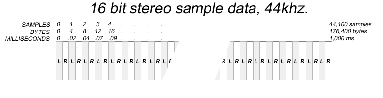

FMOD Engine User Manual 2.02
A 3D sound source is a Channel that has a position and a velocity in space. When a 3D Channel is playing, its volume, speaker placement and pitch will be affected automatically based on the relation to the listener.
A listener is typically the location of the player or the game camera. It has a position and velocity like a sound source, but it also has an orientation.
3D Sound behaviour:
2D Sound behaviour:
Note: You can blend between a 3D mix and a 2D mix with ChannelControl::set3DLevel.
For a more detailed description of 3D sound behaviour, read the tutorial on the topic.
An audio asset is a prerecorded sound that could potentially be used in a game. Assets can be loose audio files, or can be built into bank files or FSBs.
An audio channel is a monoaural signal generally associated with a particular speaker. For example, a stereo signal contains two channels, left and right. This is unrelated to the FMOD Channel class.
An automatic parameter (also known in FMOD Studio as a built-in parameter) is any parameter whose value is automatically set based on the event instance's 3D attributes whenever the FMOD Studio system is updated.
Types of automatic parameter include:
For more information about these parameter types, see the FMOD_STUDIO_PARAMETER_TYPE section of the Studio API Reference chapter.
A bank file, or "bank," is a collection of content created in an FMOD Studio project, formatted and compressed for use with the version of the FMOD Engine integrated into in your game.
Bank files usually contain both metadata and sample data. However, it is also possible to create split banks whose sample data and metadata are in separate bank files. Splitting banks in this fashion slightly increases overhead at run time, but can help keep patch size low if it is ever necessary to release a patched version of your game that includes changes to the audio metadata but not the sample data.
Bank files are compatible with any version of the FMOD Engine with the same major and product version numbers as the version of FMOD Studio used to create them. For example, a bank built in FMOD Studio version 2.00.03 is compatible with FMOD Engine versions 2.00.03, 2.00.00, and 2.00.10, but not with versions 1.10.14, 1.00.03, and 2.01.03.
At least one bank in any FMOD Studio project is a master bank. A master bank contains data relevant to your entire FMOD Studio project, and so at least one master bank must be loaded into memory before any event in any bank may be used by your game. Most games have a single master bank that is kept loaded into memory at all times.
Bank files (.bank) should not be confused with FMOD Sample Bank files (.fsb). They are two different formats.
For more information about using bank files in the FMOD Engine, see the Bank Layout, Bank Loading, and Bank Unload sections of the Studio API Guide chapter, as well as the Studio::Bank subchapter of the Studio API Reference chapter.
Only one callback is stored for each System/Studio::System/Studio::EventInstance/ChannelControl/DSP. Therefore, any registered callback should handle all required callback types and indicate those types via the callback type mask.
All calls to callbacks are issued per type. This means that if, for example, you use System::setCallback with FMOD_SYSTEM_CALLBACK_ALL, when the callback is called, only one type will be passed for the type argument. Multiple types will not be combined for a single call.
C/C++ behavior. Casting your own function type to an FMOD callback could cause a crash or corruption. For callback declaration always use the F_CALLBACK between the return type and the function name, and use the correct C types for all callback parameters.
A channel group allows attributes to be set on a group of channels collectively. A channel group also allows you to operate on a the final mixed signal of the output of its channels and child channel groups. This is known as a 'sub mix'.
A channel group can be created with System::createChannelGroup, which returns a ChannelGroup object.
The sub mix buffer can be processed with effects (see ChannelControl::addDSP), saving CPU time compared to applying the same effect to multiple channels individually.
The signal processing of a channel group persists even when a channel has stopped.
A channel group can contain many children channel groups, but can only have one parent channel group. See ChannelGroup::addGroup and ChannelGroup::getParentGroup.
A Channel is a playing instance of a Sound. This is unrelated to an audio channel.
After loading or creating a Sound, it is playable via the System::playSound command which returns a Channel object for run-time manipulation of its properties.
FMOD automatically selects a Channel for the sound to play on, you do not have to manage your own Channels.
Set the maximum number of Channels playable with System::init. For more information on Channels and how they can be real or virtual, go to the Virtual Voices white paper.
Parent topic : Sound
Compressed Samples are suited for small sounds that need to be played more than once at a time, for example sound effects.
Only certain file formats are supported with this type of sound. File formats such as .MP2, .MP3, and .FSB (using FADPCM, Vorbis, AT9 and XMA codecs).
This type of sound is stored in memory in its native compressed format, and decodes in real-time while playing.
Use FMOD_CREATECOMPRESSEDSAMPLE to create a Sound object in this mode.
| Compressed Sample attributes | Comparison |
|---|---|
| Keeps sound compressed into memory. | Can use less memory than a sample, large sounds can use more than a stream. |
| Higher CPU overhead during playback. | Uses more CPU than a sample, slightly less than a stream. |
| Fast to load. | Faster than a sample, possibly slower than a stream with very large sounds. |
| Can play more than 1 at a time. | Better polyphony than a stream. |
Note: Compressed samples have a context allocated for each instance of playback. This requires a fixed start up memory overhead. See FMOD_ADVANCEDSETTINGS to control codec maximums.
| Token | Meaning |
|---|---|
| Out | The API function will fill in information in this parameter. |
| Opt | This parameter is optional, specify null or zero to ignore. |
| R/O | This token applies to members of various structures which FMOD passes to user callbacks. User callbacks must not modify the values of these members. Modifying the values of these members will cause undefined behavior. |
| C# | This is only available in C#. |
| JS | This is only available in Javascript. |
The core API profiler tool, also known as the FMOD Profiler or FMOD Profiler.exe, is a tool for profiling your game's DSP graph and performance. It can be found in the /bin directory of the FMOD Engine distribution.
To profile your game with the core API profiler tool, you must specify FMOD_INIT_PROFILE_ENABLE when initializing the Core API. For more information about initialization flags, see the FMOD_INITFLAGS section of the Core API Reference chapter.
The Core API is a programmer API that allows the manipulation of low-level audio primitives, and is the backbone of the FMOD Engine.
Unlike the Studio API, the Core API is a standalone solution that allows you to implement every part of your game's audio using only code, and does not require the use of FMOD Studio to design audio content. However, while it is more powerful than the Studio API, it includes fewer convenience functions, and so is best used in games that require more flexibility than the Studio API can provide.
The Core API and Studio API together comprise the FMOD Engine.
For more information about the Core API, see the Core API Guide and Core API Reference chapters.
The unit of measurement for distances for 3D calculations. By default 1 disance unit is equivalent to 1 meter. To use your game's distance units specify the scale of your game's distance units to meters using System::set3DSettings.
When the source signal channel count is higher than the destination, it will distribute its higher channel information into the lower speaker mode's channels.
This example is a table of the speakers in a stereo output with the input speakers of a 7.1 signal. Values in table represent attenuation. 0dB = full volume, - = silence.
| Output speaker | Front left in | Front right in | Center in | LFE in | Surround left in | Surround right in | Back left in | Back right in |
|---|---|---|---|---|---|---|---|---|
| Left | 0dB | - | -3dB | - | -3dB | - | -6dB | - |
| Right | - | 0dB | -3dB | - | - | -3dB | - | -6dB |
Example of a higher 7.1 speaker mode signal being down mixed to a stereo output. When more than one input channel contributes to the output speaker, the inputs are summed/mixed together.
A DSP chain is a type of DSP sub-graph in which multiple DSP units are connected together in a linear fashion. Each Channel and ChannelGroup contains a DSP chain.
A DSP is capable of multiple inputs, but in a DSP chain each DSP is connected to the next with one input, all the way from the tail to the head. See FMOD_CHANNELCONTROL_DSP_INDEX for special named offsets for 'head' and 'tail' and 'fader' units.
A typical Channel is represented above, with a node at the 'head' (of type FMOD_DSP_TYPE_FADER to allow volume control and panning), which is fed by an echo effect (of type FMOD_DSP_TYPE_ECHO) which is in turn fed by a PCM wavetable unit (of type that is internal to FMOD) at the 'tail'. The signal feeds from right to left to the DSP chain's head, before continuing to the next connected DSP (not pictured).
Each DSP unit has an associated DSP clock. The speed of this clock affects any time-based behavior the DSP has, such that a DSP with a faster DSP clock will change the way it processes the signal more rapidly than one with a slower clock.
By default, all DSP clocks run at the same speed, helping ensure that different channels and channel groups remain synchronized. However, if a channel or channel group is subject to pitch adjustment, the DSP clocks associated with that channel or channel group may run at a faster or slower rate in order to account for the time stretching inherent to pitch changes.
DSP clocks are used for scheduling various time-based behaviors, including those of ChannelControl::setDelay in the Core API and modulators in FMOD Studio.
A DSP effect is an effect that makes use of a DSP unit.
The DSP engine is the portion of the FMOD Engine that traverses, executes, and mixes the DSP graph.
For more information about the DSP engine, see the DSP Architecture and Usage white paper.
The DSP graph is made of DSP units linked together into a network by DSPConnections. Audio signals originate and flow through the DSP graph, being processed by the DSP units they pass through and combined into a submix whenever multiple DSPConnections target the same DSP unit, until they arrive at an output. The DSP graph allows audio to be dynamically processed and mixed, and so is the foundation of all dynamic game audio in FMOD.
Normally, an FMOD project has one DSP graph. Sections of a DSP graph may be referred to as sub-graphs for the purpose of easy discussion.
An FMOD project's DSP graph may be viewed by using the FMOD Profiler, as long as you specify FMOD_INIT_PROFILE_ENABLE when initializing the Core API.
For more information about DSP graphs, see the DSP Architecture and Usage white paper.
A DSP sub-graph is an arbitrary subset of the DSP units and DSPConnections in a DSP graph. They are not represented in code; rather, they are a useful abstraction when discussing a project's DSP interactions, as they are easier to conceptualize of than the entire DSP graph.
DSP stands for "Digital Signal Processing", and usually relates to processing raw PCM samples to alter the sound. A DSP unit (or just "a DSP") is a modular node in the DSP graph that's capable of a specific kind of digital signal processing. Many DSPs are used in effects, or to process audio in other situations.
DSPs can be added to an FMOD Channel, or ChannelGroup with the ChannelControl::addDSP function.
FMOD provides a suite of DSPs that can alter sounds in interesting ways, such as better simulating real-world sound behavior or exaggerating sounds. Examples of such DSPs include the echo, SFX reverb, IT low pass, flange, and chorus DSPs.
You can also write your own DSPs by using System::createDSP. For more information about writing DSPs, see the DSP subchapter of the Plug-in API Reference chapter.
In the FMOD Engine, an effect is a modular unit that manipulates a signal in some way. Most effects are DSP effects, which is to say, they use digital signal processing units to alter the signal.
The effects included in the FMOD Engine are detailed in the Effects Reference chapter.
Many FMOD Engine effects also exist as FMOD Studio effects, though not all.
The FMOD Engine is a runtime library for playing adaptive audio in games. It consists of two APIs: The Studio API, and the Core API. Content created in FMOD Studio can be built as .bank files, which can then be loaded and played in the FMOD Engine using the Studio API. The Core API allows audio programmers to create audio content without using FMOD Studio, and to interact with the FMOD Engine's underlying mechanisms.
For more information about the FMOD Engine, see the FMOD Engine User Manual. You're reading it right now.
FMOD Studio is an application that allows sound designers and composers to create adaptive audio content for games. Content created in FMOD Studio can be built as .bank files, which can then be loaded and played in the FMOD Engine using the Studio API.
For more information about FMOD Studio, see the FMOD Studio User Manual.
.fsb files (also known as "FMOD Soundbanks" or "FSBs") are a proprietary file format that acts as a container for encoded and compressed sample data. They are built using FSBank API or the FMOD Soundbank Generator tool that comes packaged with the FMOD Engine, and their content can be loaded and played using the Core API.
.fsb files should not be confused with the .bank files built in FMOD Studio. Unlike FMOD Studio's .bank files, .fsb files cannot contain event or mixer metadata, but their sampledata can be loaded and played using the Core API without needing the Studio API. In most cases, if your game uses the Studio API, you should use .bank files; whereas if your game uses only the Core API, you should use .fsb files.
The FMOD Engine is compatible with all .fsb files built using the FSBank API and the FMOD Soundbank Generator tool that comes packaged with the FMOD Engine. .fsb files that were instead built using older tools (such as FMOD Designer, FMOD Ex, or versions of the FMOD Soundbank Generator tool distributed with FMOD Ex) use older, deprecated codecs, and so are not compatible with the FMOD Engine.
A GUID is a unique string used to identify a digital object, and stands for Globally Unique Identifier. In the FMOD Engine, GUIDs are commonly used to invoke and define relationships between the various elements of a project. For example, every event, asset, bus, parameter, snapshot, effect, bank, and instrument in an FMOD Studio project has a GUID, and each such object's metadata includes the GUIDs of other objects that it references or is referenced by.
Certain APIs allow you to specify which object to affect by GUID. For example, Studio::System::getEventByID gets the eventDescription of an event with a specified GUID.
GUIDs are a form of metadata. The GUID structure used by the FMOD Engine is defined by FMOD_GUID.
Handedness is an innate property of 3D cartesian coordinate systems. The handedness of the coordinate system specifies the relative direction of the Z axis along the line perpendicular to the X and Y axes, and the direction of positive rotations when an axis is directed towards the point of view.
When the X axis is directed to the right, and the Y axis is directed upwards:
For 3D spatialization to behave intuitively, it is important that FMOD is configured to use the same orientation as your game's coordinate system. By default FMOD uses a left-handed coordinate system, but FMOD may also be configured to use a right-handed coordinate system by passing FMOD_INIT_3D_RIGHTHANDED to System::init.
The loading mode of an asset is the way in which that asset's sample data is loaded into memory so that it can be played. There are three possible loading modes:
For more information about loading assets in the FMOD Engine, see the Sample Data Loading section of the Studio API Guide chapter. For more information about the streaming loading mode specifically, see the Streaming section of the Core API Guide chapter.
Metadata is data that describes other data. In FMOD Studio and the FMOD Engine, "metadata" usually means the data that describes how sample data is to be used in a game, i.e.: the data that defines an FMOD Studio project's events, mixer, and other non-sample data content. This kind of metadata is packaged into bank files whenever a project is built in FMOD Studio.
See DSP graph.
The following shows how to read sound data to a buffer using Sound::readData.
FMOD::Sound *sound;
unsigned int length;
char *buffer;
system->createSound("drumloop.wav", FMOD_DEFAULT | FMOD_OPENONLY, nullptr, &sound);
sound->getLength(&length, FMOD_TIMEUNIT_RAWBYTES);
buffer = new char[length];
sound->readData(buffer, length, nullptr);
delete[] buffer;
FMOD_SOUND *sound;
unsigned int length;
char *buffer;
FMOD_System_CreateSound(system, "drumloop.wav", FMOD_DEFAULT | FMOD_OPENONLY, 0, &sound);
FMOD_Sound_GetLength(sound, &length, FMOD_TIMEUNIT_RAWBYTES);
buffer = (char *)malloc(length);
FMOD_Sound_ReadData(sound, (void *)buffer, length, 0);
free(buffer);
FMOD.Sound sound;
uint length;
byte[] buffer;
system.createSound("drumloop.wav", FMOD.MODE.DEFAULT | FMOD.MODE.OPENONLY, out sound);
sound.getLength(out length, FMOD.TIMEUNIT.RAWBYTES);
buffer = new byte[(int)length];
sound.readData(buffer);
var sound = {};
var length = {};
var buffer = {};
system.createSound("drumloop.wav", FMOD.DEFAULT | FMOD.OPENONLY, null, sound);
sound = sound.val;
sound.getLength(length, FMOD.TIMEUNIT_RAWBYTES);
length = length.val;
sound.readData(buffer, length, null);
buffer = buffer.val;
See Also: FMOD_TIMEUNIT, FMOD_MODE, Sound::getLength, System::createSound
Sample data is raw (PCM) or a compressed audio signal, stored as a sound. Multi-channel PCM sample data (stereo and above) is interleaved, so a 5.1 signal for example has 6 values stored together per sample.
When accessing raw data in a sound, it will be in the native endianness of the platform. See Sound::lock, Sound::unlock.
When a sound file is loaded, FMOD will convert the endian to match the native endian of the platform.
Sample data can come in a variety of PCM bit depths (8,16,24,32) and types (integer, float), or as a compressed bitstream. See FMOD_SOUND_FORMAT.
Within FMOD functions you will see references to PCM samples, bytes and milliseconds.
To understand what the difference is a diagram has been provided to show how raw PCM sample data is stored in FMOD buffers.

In this diagram you will see that a stereo sound has its left/right data interleaved one after the other.
A left/right pair (a sound with 2 channels) is called a sample.
Because this is made up of 16bit data, 1 sample = 4 bytes.
If the sample rate, or playback rate is 44.1khz, or 44100 samples per second, then 1 sample is 1/44100th of a second, or 1/44th of a millisecond. Therefore 44100 samples = 1 second or 1000ms worth of data.
To convert between the different terminologies, the following formulas can be used:
Some functions like Sound::getLength provide the length in milliseconds, bytes and samples to avoid needing to do these calculations.
Parent topic : Sound
Samples (also referred to as 'decompress into memory' type sounds), are suited for small sounds that need to be played more than once at a time, for example sound effects.
Use FMOD_CREATESAMPLE to create a Sound object in this mode.
| Sample attributes | Comparison |
|---|---|
| Decompresses whole sound into memory. | Can use more memory than a compressed sample or stream. |
| Low CPU overhead during playback. | Uses less CPU than a compressed sample or stream. |
| Slower to load. | Can take longer to load on large sounds than a compressed sample or stream. |
| Can play more than 1 at a time. | Better polyphony than a stream. |
Mobile Developers: A common use for this format is to store files compressed on disk (for faster download speed), then decompress into memory at load time, for lower cpu overhead at run-time.
The signal is an abstraction of the audio sample data flowing through an FMOD project. Understanding how signals flow through a project is necessary to understand how the DSP graph and mixing work.
In most cases, signals originate from channels, which route their output signals into channel groups. Each channel group creates a submix of all the signals flowing into it. Channels and channel groups may feature DSPs that process the signal before passing it to the next DSP in the graph associated with that channel group; when there are no DSPs left in the channel group, the signal is routed from that channel group to that channel group's routing destination. All signals should eventually flow to the master channel group or an audio port supplied by an FMOD_OUTPUTTYPE plug-in.
A sound is an instance of sample data which can be loaded from media, or created from memory.
When a sound is loaded, it is either decompressed as a static sample into memory as PCM (sample), loaded into memory in its native format and decompressed at runtime (compressed sample), or streamed and decoded in realtime (in chunks) from an external media such as a disk or internet (stream).
For more detail see:
A sound can be created with System::createSound or System::createStream which returns a Sound object. A Sound object can be played with System::playSound.
Streaming sample data is sample data formatted for the streaming loading mode. The distinction between streaming sample data and non-streaming sample data is only extant when using the Studio API to play content from bank files, as the loading mode of assets in a bank file is encoded into that bank file along with those assets. When using the Core API, the loading mode of a sound is specified at run time.
When using the Core API, the loading mode of a sound is specified at run time.
For more information about streaming, see the Streaming section of the Core API Guide chapter.
Parent topic : Sound
A stream is good for a sound that is too large to fit into memory. A stream reads from disk or other media like the internet as it plays.
Typically suited to larger sounds like music, long ambiences, or voice.
Use FMOD_CREATESTREAM to create a Sound object in this mode.
| 'Stream' attributes | Comparison |
|---|---|
| Uses a small buffer in memory. | Uses less memory than a sample or compressed sample on large sounds. |
| Higher CPU overhead during playback. | Uses more CPU than sample, slightly more than a compressed sample due to simultaneous reading from medium. |
| Fast to load. | Faster than a sample on large sounds, possibly faster than a compressed sample with very large sounds. |
| Can only be played once at a time. | Worse polyphony than a sample or compressed sample. |
Note: A very small sound may use more memory than a sample or compressed sample when created as a stream, due to the stream file/decode buffer overhead being bigger than the size of the sound.
Bandwidth
Streaming audio from a medium should be kept to a limited number of instances, to avoid starvation of data leading to skipping / stuttering audio.
Increasing stream memory buffer sizes can help to mitigate this problem. See System::setStreamBufferSize and FMOD_ADVANCEDSETTINGS::defaultDecodeBufferSize.
Speed of commands using streams
System::createStream, Channel::setPosition and Sound::getSubSound when using a stream can take longer than an in memory sample, as they have to initialize internal buffers and flush them from disk.
Use FMOD_NONBLOCKING command to remove the cost from the main thread and put the overhead into a background thread.
Setting loop counts or points of a playing stream
Issues with looping streaming sounds may arise when changing the loop count or loop points of a playing stream.
Sounds created with System::createStream or FMOD_CREATESTREAM may have executed loop logic and buffered sample data before API calls to change their looping properties. If issues occur after changing loop properties you may need to call Channel::setPosition to force a flush of the stream buffer.
Note this will usually only happen if you have sounds or loop regions which are smaller than the stream decode buffer. See FMOD_CREATESOUNDEXINFO.
All FMOD Public APIs and structures use UTF-8 strings.
As C# uses UTF-16 strings by default, the FMOD C# api function parameters will automatically convert between UTF-16 and UTF-8 strings in any api using the C# "string" type or FMOD's "StringWrapper" type. However, any API that uses strings via an IntPtr will not automatically convert from UTF-16, and will instead expect a UTF-8 string to be used.
The Studio API is a programmer API that allows your game to interact with data-driven projects created in FMOD Studio at run time. The Studio API and Core API together comprise the FMOD Engine.
The Studio API is built on top of the Core API, and extends its functionality. FMOD Studio and the Studio API are flexible and powerful enough to suit the audio needs of the vast majority of games. However, if a specific game requires more flexibility than the Studio API provides, we recommend using the Core API instead.
For more information about the Studio API, see the Studio API Guide and Studio API Reference chapters.
Many functions in the Studio API allow you to identify an object within an FMOD Studio project by the object's globally unique identifier, or GUID. These API functions will accept the GUID in binary format (mostly useful when an object's GUID has been looked up programmatically by name), or as a string formatted as 32 digits separated by hyphens and enclosed in braces: {00000000-0000-0000-0000-000000000000}.
Many functions in the Studio API allow you to identify an object within an FMOD Studio project by the object's path. Objects can only be identified by path if the project's strings bank is loaded.
See the FMOD Studio User Manual for more information.
When building a master bank, FMOD Studio also writes out a strings bank for the project. The strings bank contains a string table which the Studio API can use to resolve GUIDs from paths. Studio API functions which accept paths require the project's strings bank to be loaded in order to function correctly.
A thread created by the Studio System to perform asynchronous processing of API commands and manage scheduling and playback logic for events. This thread is triggered from the core mixer thread at the period specified in the FMOD_STUDIO_ADVANCEDSETTINGS. If the studio system is initialized with FMOD_STUDIO_INIT_SYNCHRONOUS_UPDATE then no studio update thread is created.
A sync point can be used to trigger a callback during playback. See FMOD_CHANNELCONTROL_CALLBACK_SYNCPOINT.
These points can be user generated via the API or can come from a .wav file with embedded markers.
Markers can be added to a wave file in a sound editor usually by clicking on a waveform or timeline and inserting a 'marker' or 'region'.
Any RIFF based format will support sync points.
Sync points can be manipulated with:
When the source signal channel count is lower than the destination, it will distribute its lower channel information into the higher speaker mode's channels.
This example is a table of the different source signal speaker modes, mapping to a 7.1 output. Values in table represent attenuation. 0dB = full volume, - = silence.
Key: M = Mono, L = Left, R = Right, FL = Front Left, FR = Front Right, C = Center, LFE = Low Frequency Emitter, SL = Surround Left, SR = Surround Right, BL = Back Left, BR = Back Right
| Output Speaker | Mono source | Stereo source | Quad source | 5.0 source | 5.1 source | 7.1 source |
|---|---|---|---|---|---|---|
| Front left | M = -3dB | L = 0dB | FL = 0dB | FL = 0dB | FL = 0dB | FL = 0dB |
| Front right | M = -3dB | R = 0dB | FR = 0dB | FR = 0dB | FR = 0dB | FR = 0dB |
| Center | - | - | - | C = 0dB | C = 0dB | C = 0dB |
| LFE | - | - | - | - | LFE = 0dB | LFE = 0dB |
| Surround left | - | - | SL = 0dB | SL = 0dB | SL = 0dB | SL = 0dB |
| Surround right | - | - | SR = 0dB | SR = 0dB | SR = 0dB | SR = 0dB |
| Back left | - | - | - | - | - | BL = 0dB |
| Back right | - | - | - | - | - | BR = 0dB |
Example of lower and equal speaker modes up mixing to a target speaker mode = 7.1
User data is arbitrary data that can be attached to various FMOD objects. User data is stored without a type, in the form of a void * in C/C++, IntPtr in C# or an object in javascript. User data can then be retrieved and cast back to the original type. The following shows how to set and get user data on a Sound, but can be likewise applied to any object with a getUserData or setUserData method.
{
const char *userData = "Hello User Data!";
void *pointer = (void *)userData;
sound->setUserData(pointer);
}
{
void *pointer;
sound->getUserData(&pointer);
const char *userData = (const char *)pointer;
}
{
const char *userData = "Hello User Data!";
void *pointer = (void *)userData;
FMOD_Sound_SetUserData(object, pointer);
}
{
void *pointer;
FMOD_Sound_GetUserData(object, &pointer);
const char *userData = (const char *)pointer;
}
{
string userData = "Hello User Data!";
GCHandle handle = GCHandle.Alloc(userData);
IntPtr pointer = GCHandle.ToIntPtr(handle);
sound.setUserData(pointer);
}
{
IntPtr pointer;
sound.getUserData(out pointer);
GCHandle handle = GCHandle.FromIntPtr(pointer);
string userData = handle.Target as string;
}
{
var userData = "Hello User Data!";
sound.setUserData(userData);
}
{
var outval = {};
sound.getUserData(outval);
var userData = outval.val;
}